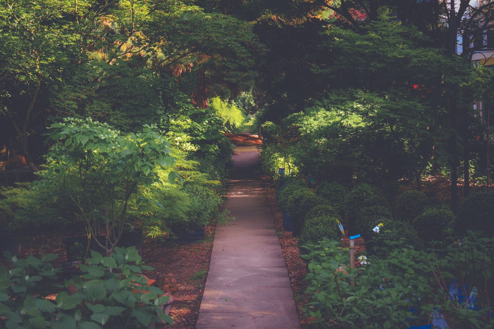
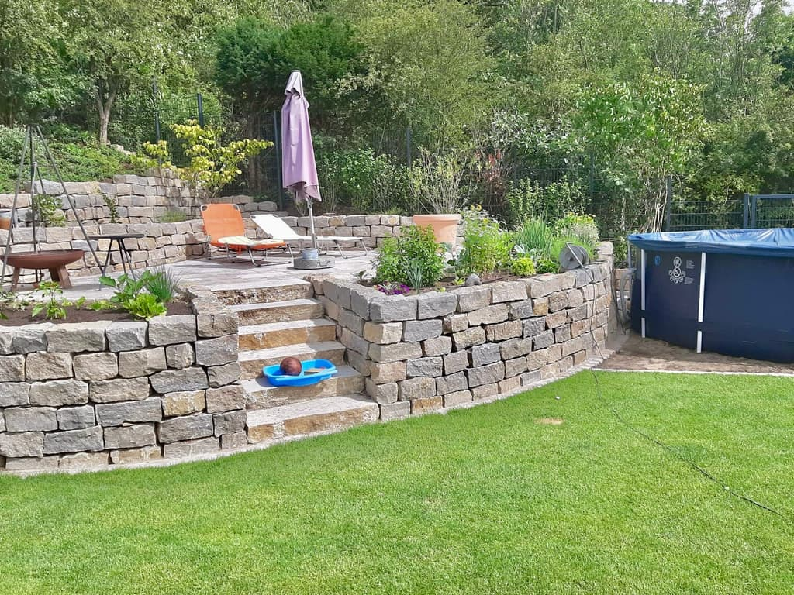
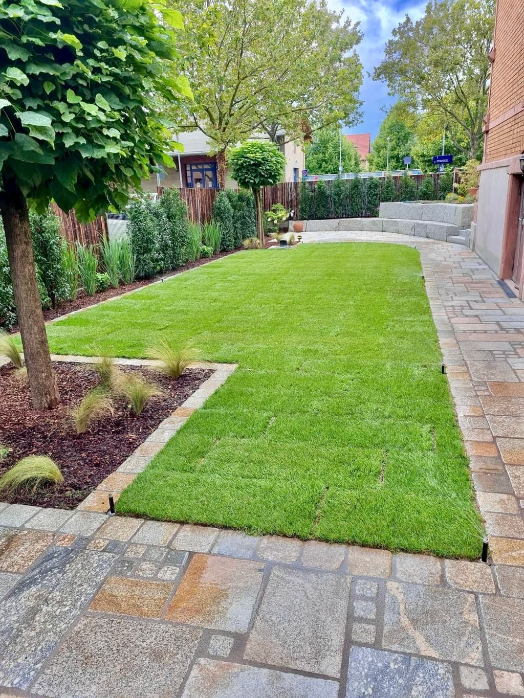
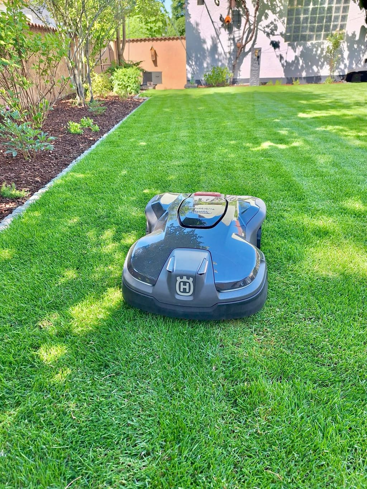
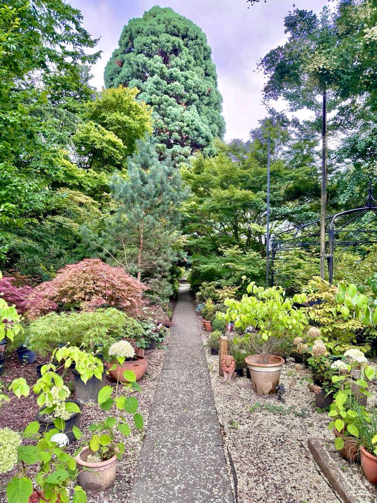
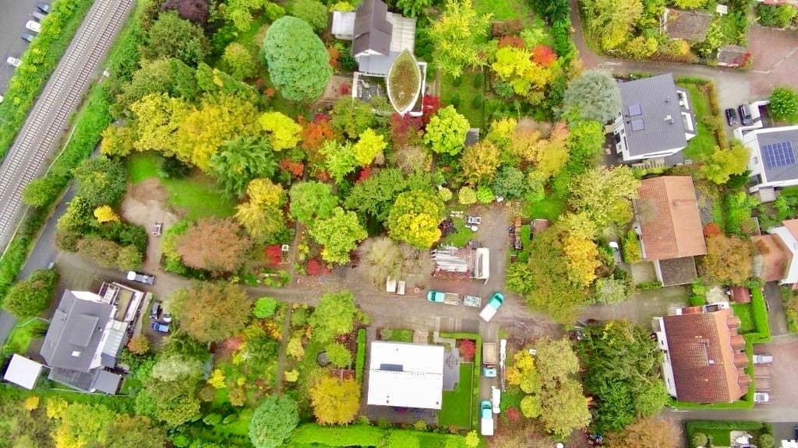

Schritt 01
Ortstermin
Wir kommen vorbei, schauen uns Boden, Licht und Zuschnitt an und hören, was Sie vorhaben.

Baumschule seit 1906 · Garten- & Landschaftsbau · Bensheim
Wir planen, bauen und pflegen Außenanlagen in der Region Bergstraße — vom Fertigrasen bis zur Trockenmauer.
01 — Leistungen
Drei Bereiche unter einem Dach: Wir gestalten neu, pflegen im Bestand und ziehen die Pflanzen dafür in der eigenen Baumschule.







Neuanlage von Grund auf. Meist beginnt ein Projekt mit einer Ortsbegehung — daraus entsteht der Plan, dann die Umsetzung.
Auswahl wechselt das BildTerrassen, Wege und Treppen aus Naturstein oder Beton — dazu Trockenmauern, Gabionen und Zäune, wo der Garten eine Kante braucht.
Automatisch bewässert mit Versenkregnern und Tropfschläuchen — Technik von Hunter, die sich später erweitern lässt.
Geliefert und verlegt, auf Wunsch mit eingearbeitetem Netz gegen Maulwurf und Wühlmaus.
Fläche eingemessen, Kabel verlegt, Mähzeiten eingestellt. Im Frühjahr nehmen wir ihn in Betrieb, im Winter kommt er zur Wartung.
Fachgerecht gesetzt und mit eigenem Gerät bewegt — auch wenn Ihr Wunschbaum schon eine stattliche Größe haben soll.
Pflege von bestehenden und neuen Gärten — in fester Unterhaltung über die Saison oder als einzelner Einsatz.
Auswahl wechselt das BildRasen, Beete, Hecken und Stauden durchs Jahr — bestehende Gärten genauso wie neu angelegte, nach festem Turnus oder auf Zuruf.
Kronenpflege, Auslichten, Totholz heraus. Wo ein Baum nicht bleiben kann, fällen wir ihn kontrolliert und räumen das Holz mit ab.
Was später in Ihrem Garten steht, wächst bei uns an der Dammstraße heran. Sie suchen Ihre Pflanze im gewachsenen Zustand aus — nicht im Katalog.
Auswahl wechselt das BildBäume, Sträucher, Hecken, Formgehölze und Stauden auf eigener Fläche — Sie sehen jede Pflanze im gewachsenen Zustand, nicht im Katalog.
Wir gehen die Quartiere mit Ihnen ab und stellen zusammen, was zu Boden, Licht und Platz passt — auch in zehn Jahren noch.
Wir liefern an, setzen mit eigenem Gerät — vom Ballen bis zum Großbaum — und verankern, wo es nötig ist.
02 — Ablauf
Fünf Schritte vom ersten Anruf bis zur Pflege. Bis zum Angebot entstehen Ihnen keine Kosten.
Schritt 01
Wir kommen vorbei, schauen uns Boden, Licht und Zuschnitt an und hören, was Sie vorhaben.
Schritt 02
Aus der Begehung wird ein Plan: Flächen, Wege, Pflanzen und Material — maßstäblich gezeichnet.
Schritt 03
Jede Position einzeln aufgeführt, ohne Sammelposten. Sie sehen, wofür Sie zahlen.
Schritt 04
Umsetzung durch die eigene Mannschaft mit eigenem Fuhrpark. Ein Ansprechpartner bleibt derselbe.
Schritt 05
Auf Wunsch bleiben wir dran — Schnitt, Bewässerung und Nachpflanzung in den Jahren danach.
Ein Garten ist erst fertig, wenn er eingewachsen ist. Deshalb planen wir nicht für den Abnahmetermin, sondern für das Jahrzehnt danach.
03 — Referenzen
Ein Querschnitt aus der Region Bergstraße. Zum Vergrößern auf eine Karte tippen.

Steinarbeiten
Geschichtete Natursteinmauer fängt den Hang ab. Dahinter Mulchbeet mit Lavendel und neuer Heckenpflanzung.

Terrassenbau
Plattenfläche als ruhige Mitte, sauber eingefasst vom Rasen. Kiesband und Baumbank schließen die Anlage nach hinten ab.

Pflasterarbeiten
Pflasterfläche unter dem Carport, Blockstufen zum Eingang und eine Rinne an der Straße für den Wasserablauf.

Gartenanlage
Aus einem Hinterhof zwischen Brandwänden wird ein Garten: Rasen, Mulchbeete, Hecke als Rahmen und ein Teich als Mitte.

Zaunbau
Waagerechte Lamellen mit Glaselement als Lichtfuge. Davor junge Gehölze, die den Zaun in ein paar Jahren auflösen.
Pflanzenarbeiten
Der Bestandsbaum bleibt stehen und bekommt eine Rundbank. Kiesbett mit Gräsern statt Rasen unter der Krone.

Eigener Betrieb
Unsere Quartiere an der Dammstraße. Hier suchen Sie Ihre Pflanzen im gewachsenen Zustand aus, nicht im Katalog.
04 — In Zahlen
05 — Der Betrieb
Wir sind Gartengestaltung und Baumschule Belzner — ein Familienbetrieb an der Dammstraße in Bensheim. Was wir planen, bauen wir auch selbst. Kein Subunternehmer, der Ihren Garten zum ersten Mal sieht, wenn der Bagger schon läuft.
Mit eigenem Fuhrpark und eigener Baumschule decken wir von der ersten Skizze bis zur Pflege alles ab. Das dauert manchmal länger als bei anderen. Dafür steht es hinterher auch noch in zehn Jahren.


Seit 1906
06 — Karriere
Wir bilden selbst aus und übernehmen gern. Wenn Sie lieber draußen als im Büro arbeiten, passt das.
Ausbildung · ab August
Dreijährige Ausbildung im Betrieb. Sie lernen alles von der Pflanzung über Steinarbeiten bis zur Pflege — und fahren von Anfang an mit auf die Baustelle.
Vollzeit · unbefristet
Sie übernehmen eigenverantwortlich die Umsetzung von Gartenanlagen — Steinarbeiten, Pflanzung, Wegebau. Führerschein Klasse BE von Vorteil.
Vollzeit · unbefristet
Sie betreuen unsere Pflegegärten durch die Saison — Hecken- und Formschnitt, Rasen- und Beetpflege, Stauden und Gehölze. Erfahrung in der Gartenpflege ist willkommen, Sorgfalt zählt mehr als Zeugnisse. Führerschein Klasse B von Vorteil.
Drei kurze Schritte. Lebenslauf und Zeugnisse als PDF anhängen — ein Anschreiben ist nett, aber kein Muss.
07 — Kontakt
Kostenlos und unverbindlich. Schreiben Sie uns, was Ihnen vorschwebt — wir melden uns zurück.
Telefon
06251 3091Adresse
Dammstraße 100–108
64625 Bensheim
Öffnungszeiten
Termin nach Absprache
Einzugsgebiet
Bensheim, Heppenheim, Zwingenberg, Lorsch und Umgebung
🌱 Wir suchen
Drei offene Stellen in Bensheim — draußen, im festen Team und mit eigenen Baustellen statt Akkordarbeit.
Nichts Passendes dabei? — oder anrufen: 06251 3091